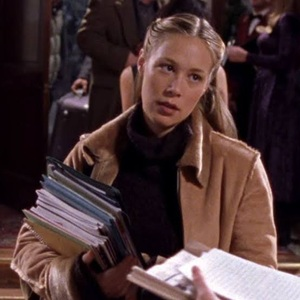
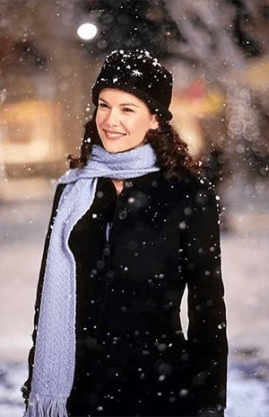

Gilmore Girls é a série de conforto definitiva, misturando humor rápido, dramas familiares realistas e uma atmosfera acolhedora de cidade pequena. Lançada originalmente em 2000 pela Warner Bros., a produção acumulou 7 temporadas e um revival na Netflix, tornando-se um verdadeiro fenómeno cultural transgeracional.
Paris Geller é a rival implacável que se torna a amiga mais leal e caótica de Rory. Obcecada pelo sucesso académico, ela é movida por uma neurose constante e pelo medo absoluto de falhar. Sem qualquer filtro social, Paris dispara verdades brutais e sarcásticas contra todos. Em Yale, a sua energia atinge o auge na liderança do jornal e em crises existenciais hilariantes. O seu par ideal é Doyle, um estudante tão excêntrico e neurótico quanto ela. No fundo, toda a sua agressividade esconde uma jovem vulnerável e imparável.

Lorelai é a mãe solteira, independente e viciada em café que foge da alta sociedade para criar a filha nos seus próprios termos. Com um humor ultraveloz e cheio de referências pop, ela esconde as suas vulnerabilidades atrás de piadas e sarcasmo. A sua vida em Stars Hollow é marcada pela gestão da sua própria pousada e por uma lendária tensão romântica com Luke. Embora seja a melhor amiga de Rory, o seu orgulho é testado nos jantares obrigatórios de sexta-feira com os seus pais ricos. No fundo, Lorelai é uma força leal e carismática que protege a sua liberdade e a sua filha acima de tudo.

Rory é a filha prodígio, tímida e devoradora de livros cuja jornada académica e pessoal guia toda a série. Crescer sob a asa de Lorelai transformou-a numa jovem doce, mas com uma ambição gigante de se tornar jornalista internacional. A sua entrada na elite de Chilton e, mais tarde, em Yale, divide o seu coração entre a simplicidade de Stars Hollow e o luxo dos avós. Os seus três grandes amores — Dean, Jess e Logan — moldam o seu amadurecimento e as suas crises existenciais. Apesar de cometer erros controversos na idade adulta, ela continua a ser o porto de abrigo intelectual da mãe.
Organizei uma tabela de cinco séries para conheceres alguns dos episódios mais icónicos da série.
| Temporada | Episódio | Acontecimento |
|---|---|---|
| T1 | Ep 1 ("Pilot") | Lorelai faz um pacto financeiro com os seus pais ricos para pagar a escola de elite de Rory, iniciando os obrigatórios e caóticos jantares de sexta-feira. |
| T3 | Ep 7 ("They Shoot Gilmores, Don't They?") | Rory e Lorelai competem numa maratona de dança de 24 horas, que termina no fim dramático do namoro de Rory e Dean devido aos ciúmes de Jess. |
| T5 | Ep 13 ("Wedding Bell Blues") | Emily e Richard renovam os votos de casamento, mas a festa explode em drama quando Lorelai, Luke e Christopher se confrontam violentamente por causa de Rory e Logan. |
| T6 | Ep 13 ("Friday Night's Alright for Fighting") | A família Gilmore protagoniza o jantar de sexta-feira mais louco da série, alternando histericamente entre gritos, acusações, gargalhadas e discussões antigas. |
| T7 | Ep 22 ("Bon Voyage") | • Stars Hollow junta-se numa festa surpresa gigante para se despedir de Rory, que vai cobrir a campanha de Barack Obama, enquanto Lorelai e Luke finalmente se reconciliam com um beijo à chuva. |
Para conhecer melhor esta série, podes visitar este site através da seguinte hiperligação:
Gilmore Girls é uma ode intemporal à complexidade dos laços familiares, ao conforto das pequenas comunidades e ao crescimento pessoal. Entre canecas infinitas de café, conversas a mil à hora e o calor inconfundível de Stars Hollow, a série prova que errar, recomeçar e amar em excesso faz parte de qualquer jornada. Quer escolhas focar-te na força de Lorelai, na ambição de Rory ou no caos adorável de Paris, este é um mundo para onde vais querer sempre regressar — especialmente quando precisar de um casaco de malha e de uma boa chávena de café.